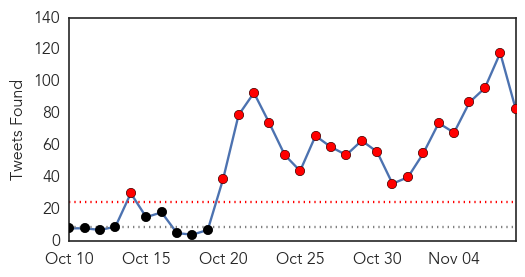
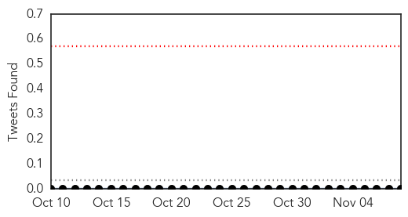

Ebola
30-Day Web Trend
2 alerts, 0 warnings

30-Day Twitter Trend
21 alerts, 0 warnings

Article Locations

Article Confidences

Top Articles:
- 1.000
- Sierra Leone declared free of Ebola, setting off celebration
- 1.000
- Sierra Leone declared free of Ebola transmissions
- 1.000
- Sierra Leone Declared Free of Ebola Transmissions
- 1.000
- World Health Organization Declares Sierra Leone Free of Ebola Virus Transmission
- 1.000
- Sierra Leone is Finally Marked Ebola Free
- 1.000
- Sierra Leone has successfully beaten Ebola, WHO says
- 1.000
- Sierra Leone Declared Free of Ebola Transmissions
- 1.000
- Sierra Leone free from Ebola transmissions on Saturday
- 1.000
- William P.J. Lynch Jr.comWilliam P.J. Lynch Jr.com
- 1.000
- Sierra Leone's Ebola Outbreak Is Over, WHO Says
- 1.000
- Ebola “Day-Zero” in Sierra Leone - Sierra Leone
- 1.000
- Dont worry , be horny!
- 1.000
- Sierra Leone Current Affairs
- 1.000
- Sierra Leone Is Now Declared Ebola-Free Officially
- 1.000
- Sierra Leone Declared Ebola-Free
- 0.999
- Ebola still smolders in rural Guinea
- 0.999
- WHO Officially Declares Sierra Leone Ebola
- 0.998
- Sierra Leone celebrates end of Ebola epidemic
- 0.998
- Sierra Leone Celebrates End Of Ebola Epidemic
- 0.998
- World Health Organization: Sierra Leone Is Ebola-free
- 0.997
- Sierra Leone Ebola free
- 0.997
- WHO declares Sierra Leone Ebola-free
- 0.996
- Sierra Leone rejoices end of Ebola epidemic
- 0.996
- Sierra Leone celebrates end of Ebola epidemic
- 0.994
- The decades-old treatment that may save a young Dallas nurse infected with Ebola
- 0.993
- Sierra Leone celebrates end of Ebola epidemic
- 0.993
- Sierra Leone Declared Ebola-Free
- 0.992
- WHO Declares the End of Ebola Epidemic in Sierra Leone
- 0.992
- Sierra Leone Declared Ebola-Free
- 0.988
- West African governments must integrate trained Ebola responders into community-based health systems - Sierra Leone
- 0.985
- Street celebrations as Sierra Leone declared Ebola-free
- 0.985
- Sierra Leone Is Free From Ebola, Women Still In Danger
- 0.984
- Sierra Leone president lashes out as country declared Ebola-free
- 0.982
- WHO: Sierra Leone declared free of Ebola
- 0.980
- WHO declares Sierra Leone Ebola free
- 0.980
- Street celebrations as Sierra Leone declared Ebola-free
- 0.978
- Sierra Leone Declared Ebola-Free
- 0.974
- Sierra Leone: West African governments must integrate trained Ebola responders into community-based health systems
- 0.969
- Street celebrations as Sierra Leone declared Ebola-free
- 0.956
- Connecticut Teen Develops Ground Breaking Test For Ebola
- 0.931
- Street celebrations as Sierra Leone declared Ebola-free
- 0.910
- Ebola-free mark met by cheers, caution
- 0.907
- The World Today: Activists say Islamic State releases 37 Syrian Christians
- 0.883
- Ebola Is Still Affecting the Women and Girls of Sierra Leone
- 0.826
- Germany: Migration Crisis Becomes Public Health Crisis by Soeren Kern
- 0.820
- Migration Crisis Becomes Public Health Crisis
- 0.794
- Sierra Leone Is Ebola-Free, but Pregnant Girls Still Suffer the Aftermath
- 0.794
- Germany: Migration Crisis Becomes Public Health Crisis
- 0.691
- A Part Of Sierra Leone's Future
- 0.686
- 110815-nvr-wir-worldbriefs
Showing top 50 articles...
Top Tweets:
- 0.998
- World Health Organization commends Sierra Leone for stopping Ebola virus transmission - https://t.co/8T1sTwRUOu ebola
- 0.989
- Ebola: World Health Organization says virus transmission in Sierra Leone has ended - https://t.co/khDhJ8MixU ebola
- 0.984
- World Health Organization: Sierra Leone Is Ebola-free - https://t.co/KfXcBeUeYW ebola
- 0.984
- World Health Organization declares Sierra Leone free of Ebola transmissions - https://t.co/xh3BPxuiz4 ebola
- 0.984
- Ebola outbreak: Sierra Leone to be declared disease - https://t.co/fIboOZ0g5N ebola
- 0.976
- Britain hails end of Ebola outbreak in Sierra Leone - https://t.co/FVTk48xUGn ebola
- 0.973
- Sierra Leone celebrates end of Ebola outbreak - https://t.co/nU3js8ta0C ebola
- 0.973
- Sierra Leone celebrates end of Ebola outbreak - https://t.co/0Ak0sSvpsF ebola
- 0.971
- Sierra Leone Celebrates The End Of The Ebola Outbreak - https://t.co/08ZPmxl0FR ebola
- 0.971
- Ebola epidemic ends in Sierra Leone - https://t.co/YAIn19j8TF ebola
- 0.968
- Celebrations as Sierra Leone's Ebola outbreak declared over - https://t.co/JSdhAKAeBq ebola
- 0.962
- Sierra Leone celebrates end of Ebola epidemic - Eyewitness News https://t.co/7TINpGNxr4 ebola EVD
- 0.961
- What the ebola virus taught us - https://t.co/349fUKBSTs ebola
- 0.958
- Sierra Leone declared free of Ebola virus - https://t.co/2pCpb8Kjgn ebola
- 0.957
- Ebola outbreak - https://t.co/UpMwDZivJL ebola
- 0.955
- UNICEF welcomes end of Ebola outbreak in Sierra Leone calls for more support to 11500+ ... - https://t.co/3ZkW4d8v7G ebola
- 0.945
- RT: L’OMS déclare la Sierra Leone exempte de la transmission du virus de l’Ebola https://t.co/zobnIlKj2d
- 0.938
- EBOLA United States Ebola baby born at US hospital https://t.co/Z9rxM2wNQI EbolaFree ebolafreesierraleone Ebola
- 0.934
- Limerickman proposes and marries in Sierra Leone despite Ebola fears - https://t.co/2QRPcziivg ebola
- 0.930
- Sierra Leone ebola free - https://t.co/GzIJUslowI ebola
- 0.930
- Sierra Leone Ebola Free - https://t.co/hAkSbtsWNw ebola
- 0.928
- Nov. 8 2014 saw highest no. of Ebola cases ever in Sierra Leone -- 111. One year later declares country free of Ebola transmission.
- 0.925
- WHO declares Sierra Leone Ebola free - https://t.co/S2cYiWf2E1 ebola
- 0.925
- Sierra Leone declared free of Ebola epidemic - https://t.co/9Pi8Dfij0y ebola
- 0.923
- Sierra Leone Free Of Ebola - https://t.co/mGEqWWyWeI ebola
- 0.920
- WHO declares Sierra Leone free of Ebola - https://t.co/jgXTKg1Jev ebola
- 0.920
- WHO declares Sierra Leone 'free of Ebola' - https://t.co/VNOhWNCVtE ebola
- 0.912
- WHO officially declares Sierra Leone Ebola-free - https://t.co/z1wM5RxiEt ebola
- 0.912
- The people of Sierra Leone say bye bye Ebola - https://t.co/sXtoNWZ8hF ebola
- 0.911
- Sierra Leone is officially Ebola-free - https://t.co/ajn3XXyjzD ebola
- 0.911
- Sierra Leone is officially 'Ebola-free' - https://t.co/QIPRkgKsjB ebola
- 0.906
- AFRICA: Sierra Leone declared free of Ebola - https://t.co/XiEGkJEuAw ebola
- 0.904
- when the next ebola survivors has sex with a non ebola survivors EBOLA again!
- 0.903
- yes 25 of them already received the new Ebola virus vaccine and they are calling for volunteers to be injected with Ebola
- 0.897
- Sierra Leone celebrates as WHO declares country free of Ebola - https://t.co/JKSbHfjZvp ebola
- 0.889
- WHO: Sierra Leone declared free of Ebola - https://t.co/bafORxvaKu ebola
- 0.878
- Alie Kabba Speaks about Sierra Leone's Ebola free status - https://t.co/LjhM2hKU9k ebola
- 0.875
- Sierra Leoneans mark Ebola-free status but outbreak's effects persist - https://t.co/KKSnZF1ZIl ebola
- 0.874
- BREAKING!!!!! EBOLA survivor gives birth to baby in United States!!!!!! EBOLA LIVES SEMEN 9 MONTHS https://t.co/Z9rxM2wNQI ebola EbolaFree
- 0.872
- Sierra Leone declared Ebola-free - The Week Magazine https://t.co/DZqszdLxuU ebola EVD
- 0.868
- Sierra Leone declared Ebola free - https://t.co/12zjmWUkvg ebola
- 0.868
- Sierra Leone declared Ebola free - https://t.co/0duSkVkKaA ebola
- 0.868
- Sierra Leone Declared Ebola Free - https://t.co/5WVyDf9BiK ebola
- 0.867
- Sierra Leone declared free of Ebola - https://t.co/VFpLlee1dh ebola
- 0.857
- Sierra Leone Is Now Declared Ebola-Free Officially - https://t.co/t3ExU6o2aD ebola
- 0.853
- Sierra Leone declared free of Ebola as Guinea struggles - https://t.co/lz9AK55z6s ebola
- 0.852
- Sierra Leone declared Ebola free as Guinea struggles - https://t.co/Csr7gGjBdl ebola
- 0.840
- How The Ebola Scare Stigmatized African Immigrants In The U.S. - Science 2.0 https://t.co/CFViGexiQ7 ebola EVD
- 0.836
- Guinea traditional healers sensitized on ebola - https://t.co/RxIMTsveSW ebola
- 0.835
- Siera leone Ebola free WHO now says - https://t.co/A2wZwu4Mzc ebola
Showing top 50 tweets...
Chikungunya
30-Day Web Trend
0 alerts, 0 warnings

30-Day Twitter Trend
0 alerts, 0 warnings

Article Locations

Article Confidences

Top Articles:
-
No articles found for Nov 08, 2015
Top Tweets:
-
No tweets found for Nov 08, 2015